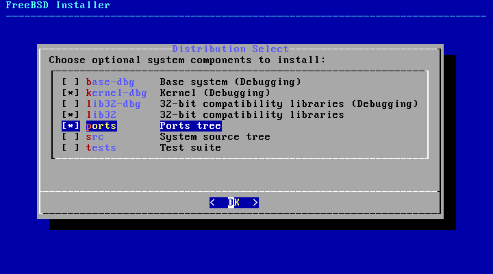

Installing a FreeBSD virtual machine¶
Introduction¶
These are my notes about the installation of a FreeBSD 12.1 virtual machine on my Debian GNU/Linux stable system (“AMD64” architecture).
The process is very similar to the installation of a Debian GNU/Linux virtual machine and this page does not repeat all the details and mentions only the specific actions.
If you’re looking for information about the post-install configuration and usage of the FreeBSD system, the “My first steps with FreeBSD” page may be more interesting.
Getting and verifying the FreeBSD installer ISO image¶
Here are the commands I use to download the installer image and the other files needed for the verification:
mkdir -p ~/vm/installer_iso/freebsd_12.1
cd ~/vm/installer_iso/freebsd_12.1
wget https://download.freebsd.org/ftp/releases/amd64/amd64/ISO-IMAGES/12.1/FreeBSD-12.1-RELEASE-amd64-bootonly.iso
wget https://download.freebsd.org/ftp/releases/amd64/amd64/ISO-IMAGES/12.1/CHECKSUM.SHA512-FreeBSD-12.1-RELEASE-amd64
Then I do the verification with:
sha512sum -c --ignore-missing CHECKSUM.SHA512-FreeBSD-12.1-RELEASE-amd64
Creating the FreeBSD virtual machine¶
Start the installation¶
It consists in running a virt-install command, very much like for the
Debian unstable virtual machine creation.
Don’t forget to start the default virtual network and to run the needed commands so that applications running as root can connect to the X server.
Use osinfo-query os to find the most appropriate value for the
--os-variant option (the closest value to the OS you’re installing).
Here is the exact virt-install command I use:
virt-install --name freebsd_12.1 \
--memory 1024 \
--vcpus=1 \
--cdrom FreeBSD-12.1-RELEASE-amd64-bootonly.iso \
--disk pool=default,size=10 \
--os-variant freebsd11.2 \
--graphics spice \
--channel spicevmc & # As root.
During the installation, I installed the components selected by default plus the ports tree.
FreeBSD base installation¶
Not much to say here. I haven’t had any major difficulty doing the base installation.